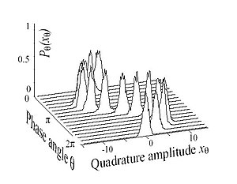

Lecture 07
Scalar Fields
APMA E2000
Drew Youngren dcy2@columbia.edu
Announcements
- Recitation 04 this week.
- Quiz 3 this week - Curves and motion
- HW4 due next Tues
- Early warning: Midterm 1 Thursday, 2/20.
1-minute review
HW3.4 Solution
Curves
Let $\vec r(t), a \leq t \leq b$ be a smooth parametrization of a curve $\mathcal C$.
\[\begin{align*} \text{tangent vector}&:& \vec r'(t) \\ \text{unit tangent vector} &:& \vec T(t) = \frac{\vec r'(t)}{|\vec r'(t)|} \end{align*} \]Curves
Let $\vec r(t), a \leq t \leq b$ be a smooth parametrization of a curve $\mathcal C$.
\[\begin{align*} \\ \text{arc length} &:& s = \int_a^t |\vec r'(u)|\,du \\ \text{curvature} &:& \kappa = \left| \frac{d\vec T}{ds} \right| = \frac{|\vec T'(t)|}{|\vec r'(t)|} \end{align*}\]Scalar Fields
Definitions
A scalar field (or function of several variables) is simply a function of the type \[f:\RR^n \to \RR.\]
\[\operatorname{dom} f = \{(x,y)\in \RR^2: f(x,y)\in \RR\}.\]
\[\operatorname{im} f = \{f(x,y)\in \RR: (x,y)\in \operatorname{dom} f\}.\]
Examples
-
 elevation: $f(x,y)$ is the height in feet above
sea level for point at longitude $x$ and latitude $y$.
elevation: $f(x,y)$ is the height in feet above
sea level for point at longitude $x$ and latitude $y$.
- temperature: $u(x,y,z)$ is the temperature in the room at position $\langle x, y, z\rangle$.
-  $|\Psi(\vec x, t)|^2$ gives the probability density of finding a particle with wave function $\Psi$ at position $\vec x$ at time $t$.
A Note on Terminology
"Input vector, output scalar" is a little vague when it comes to implementation. One may have to coax one's data into the right form depending how the function is defined.
Level Sets
A level set for a scalar field $f$ is the set of all input values that give a particular output, $k$. \[ f^{-1}(k) = \{ \vec x \in \operatorname{dom} f : f(\vec x) = k\}\]
Example
The level sets of $f(x,y) = x^2 + y^2$ are circles.
Example
The level sets of $f(x,y,z) = x^2 + y^2 + z^2$ are spheres.
Examples
Find the domain, image, and sketch a few level curves for each function below.
- $f(x,y) = (x^2 + 2 x y + y^2)/9$
- $g(x,y) = e^{-x^2 - y^2}$
- $h(x,y) = x \sin(y) / 2 + y\cos(2 x) / 2$
Exercises
Find the domain, image, and sketch a few level curves for each function below.
- $\displaystyle xy$
- $\displaystyle x \sin y$
- $\displaystyle \sqrt{4-x^2-y^2}$
- $\displaystyle \ln (x^2 + y^2)$
- $\displaystyle 2^{x-y}$
Limits
Good News
The definition of limit for a function of several variables needs barely be changed.
Continuity
Every elementary functions is continuous on its domain. That includes:
- power functions $x^p$
- absolute value $|x|$
- exponents $a^{x}$
- trigonometric functions $\sin(x), \cos(x)$
- inverses of the above $\ln x$, $\arctan(x)$, etc.
- and all sums, differences, products, quotients, and compositions thereof.
Example
\[ f(x,y,z) = \frac{\sin(x^2) - 3yz + \log_2 \frac{12 x z^2 - y}{\sqrt[3]{y^2 + z^2 + 7}}}{\tan^{-1}(|x|) + y^4z^2 + 4} \]
\[ \lim\limits_{(x,y,z) \to (0,-1,0)} f(x,y,z) \] \[ = -\frac14 \]
Bad News
Weird things can happen in several variables.
Key Example
Compute the following limit or show it does not exist. \[\lim\limits_{(x,y) \to (0,0)}\frac{xy}{x^2 + y^2} \]
Solution
The limit does not exist.
Showing Existence
What if all paths suggest the limit exists?Key Example
Compute the following limit or show it does not exist. \[\lim\limits_{(x,y) \to (0,0)}\frac{x^2y}{x^2 + y^2} \]
Solution...
Polar coordinates
By substitutin $x = r \cos \theta$, $y = r\sin \theta$ we make the limit \[ \lim\limits_{(x,y) \to (0,0)} f(x,y) \] becomes
\[\lim\limits_{r \to 0^+} f(r \cos \theta, r \sin \theta). \]
Example
\[\lim\limits_{(x,y) \to (0,0)}\frac{x^2y}{x^2 + y^2} = \lim\limits_{r \to 0^+} \frac{(r^2 \cos^2 \theta)r \sin\theta}{r^2\cos^2\theta + r^2 \sin^2 \theta}\]
\[-1 \leq \cos^2 \theta \sin \theta \leq 1\]
\[\lim\limits_{r \to 0^+} -r \leq \lim\limits_{r \to 0^+} \frac{r^3 \cos^2 \theta \sin\theta}{r^2} \leq \lim\limits_{r \to 0^+} r\]
\[ \lim\limits_{r \to 0^+} r \cos^2 \theta \sin \theta = 0 \]
Rough Plan for Limits
- Check continuity. Try plugging in.
- Check a few paths. If any differ, limit DNE.
- Try polar coordinates. May need to translate to origin.
- Try something else. Squeezing, etc.
Learning Outcomes
You should be able to...
- Identify domains and images of functions of several variables.
- Match formulas, graphs, and contour plots of scalar fields.
- Sketch level sets for basic functions of 2 variables.
- Identify continuous functions and compute limits for functions of 2 variables.